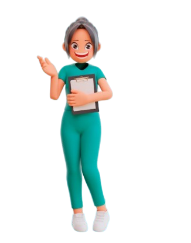

Hai! Aku NutriGuardian 👋
Arahkan kameramu ke kartu makanan, dan aku akan muncul untuk menjelaskan gizi dari setiap makanan untukmu!
Mengecek koneksi… Untuk kamera bisa aktif, buka halaman ini lewat server lokal.
🍽️ 6 Kartu Makanan
Gunakan Chrome (Android) atau Safari (iOS) terbaru.
Jalankan lewat Live Server, npx serve ., atau python -m http.server.